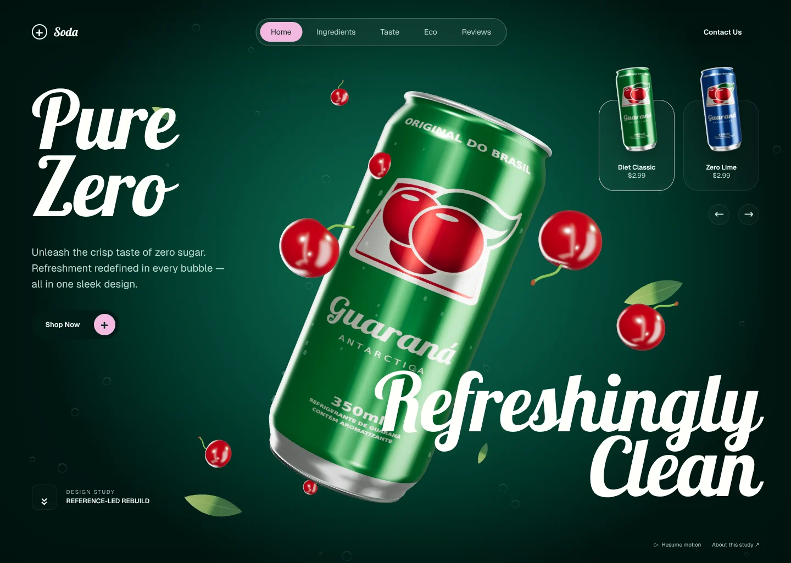
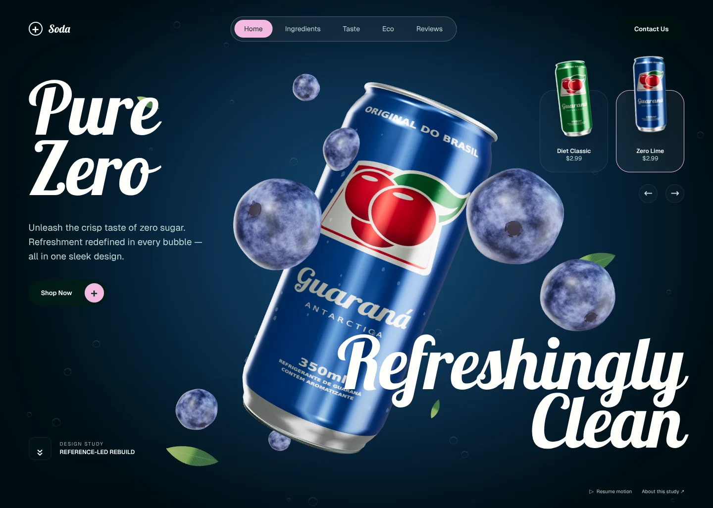

First, look.
Then, make.
A corrected approach: inspect the original footage, recover its visual hierarchy, and reconstruct the experience. Not another interpretation of a generic prompt.
01 / Solve the reference problem
The user could play the original preview, but the sandbox could not download it and the upload flow rejected their file. Instead of asking them to convert it, a branch-scoped remote job retrieved the public MP4 and extracted standard JPEG frames using FFmpeg. The frames were returned through the GitHub API and verified locally by SHA-256.
Actual master: 1440 × 1026 · 7.433333 seconds. Thirteen reference images were retrieved: the poster, six preview frames, and six master frames. The footage—not the rejected first build—became the visual authority.
02 / Resolve the contradictions
The archived catalog described an emerald, single-screen hero with script headlines and a centered can. Another archived brief specified pink colors, block type, and additional sections. The inspected footage confirms the first direction. The new page therefore removes the invented section stack and restores the observed composition.
The flavor names and blueberry pairing intentionally follow the visible reference. They are not asserted as real product ingredients.
03 / Rebuild the visual hierarchy
- White script “Pure Zero” at the left, not a block-type wordmark behind the product.
- A huge, diagonally tilted metallic can at the center of the image.
- “Refreshingly Clean” overlaps the lower-right scene as a second typographic anchor.
- Frosted center navigation, small raised product cards at upper right, pale pink active states, and restrained supporting copy.
- Dark corners, a colored center glow, glossy fruit, subtle leaves, and near-transparent bubbles establish depth.
The large display face is a locally hosted Lobster font. Screenshot review uses the original 1440 × 1026 dimensions so layout differences are visible rather than disguised by different viewports.
04 / Make it real-time, not a video backdrop
The can is reconstructed from a shaped lathe profile with corrected UV mapping. Printed metal, bare aluminum, rolled rims, lid, opening, pull-tab, and rivet are modeled separately. A floating-point studio environment produces elongated reflections. Product thumbnails are generated from that same live model.
Cherries have a dimpled shape, stems, and glossy skin. Blueberries use non-periodic spherical noise and a small calyx; the initial banded texture was rejected during screenshot inspection. Leaves use curved geometry and local vein textures.
No original video or screenshot is embedded behind the controls. The product, fruit, lighting, and transitions are rendered by the implementation.
05 / Recover the visible transition
At approximately 2.68 seconds, the source shows a spinning, blurred blue can while the green world is still changing. By 4.01 seconds, the world is blue and the cherries have become blueberries. This informed a coordinated sequence: spin → label change → background interpolation → fruit exchange → settle.
Pointer response uses a spring. A single scheduler drives scene motion; hidden/offscreen rendering pauses. Reduced motion skips the spin and settles directly into the chosen flavor. A visible pause control keeps the product inspectable.
06 / Preserve function without inventing the original
The clip does not open its navigation pages. Ingredients, Eco, and Reviews therefore open explanatory local sheets rather than invented testimonials or claims. Shopping and contact are explicit local demonstrations; no transaction is created and no personal information is sent or stored.
The source award caption is replaced by a same-scale “Design study / Reference-led rebuild” signature. The depiction of Guaraná Antarctica is an independent reference reconstruction, not an affiliation or endorsement.
07 / Test behavior. Review design separately.
The dedicated suite checks WebGL rendering, flavor changes, actual canvas changes, cart arithmetic, focus restoration, dialogs, mobile layouts, reduced motion, no-JavaScript content, WebGL fallback, local asset requests, and automated accessibility. Screenshots capture both desktop flavors and three mobile widths.
Those tests cannot approve visual fidelity. The model, label, reflection environment, and fruit microstructure are reconstructed rather than exact original assets. Mobile is an adaptation because no original mobile footage was supplied. These differences are recorded, not hidden behind a passing test count.
Current rebuild captures
These are screenshots of the reconstructed page, not the source video. Desktop captures use the original 1440 × 1026 dimensions.


The focused suite passed 42 assertions with zero failures and zero default-state automated WCAG A/AA violations. Visual approval remains a separate, user-led decision.
08 / Reproduce and inspect
python3 getlayersai/tools/serve.py --port 8080 \ --entry /getlayersai/rebuilds/soda/ npm ci --prefix getlayersai node getlayersai/tests/soda-rebuild.mjs # Restore the actual research frames if the cache is cleared: python3 getlayersai/tools/retrieve-reference.py \ 36ae0822c43116b003886592852c6992471b9cc0